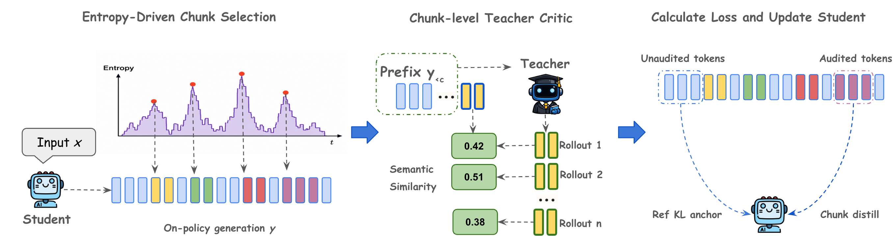

A chess coach who never explains their thinking can still play. At the moves where you hesitate most, they play on from your position several times; the more your next few moves look like theirs, the harder you drill them. Between those moments, a leash keeps you playing as you used to.
생각을 설명해 주지 않는 체스 코치도 직접 둘 수는 있다. 내가 가장 망설인 수에서 코치가 내 국면을 이어받아 여러 번 둬 본다. 내 다음 몇 수가 코치의 수와 닮을수록 그 수를 더 세게 연습한다. 그 사이 구간에서는 목줄이 나를 원래 두던 방식대로 붙잡아 둔다.
How it works: audit the forks, not every token작동 방식: 모든 토큰이 아니라 갈림길만 검사한다
The teacher never shows a probability; it only writes text. Similarity between its text and the student's chunk stands in for the logit.
교사는 확률을 보여 주지 않고 텍스트만 쓴다. 교사의 텍스트와 학생 구간의 유사도가 logit을 대신한다.

- Find the forks.갈림길을 찾는다.The student writes a full answer; its M=10 highest-entropy tokens each anchor a C=50-token chunk to audit.학생이 답 전체를 쓰고, 엔트로피가 가장 높은 토큰 M=10개가 각각 검사할 50토큰(C=50) 구간의 기준점이 된다.
- Let the teacher continue.교사에게 이어 쓰게 한다.From each prefix the teacher writes N=10 continuations; summed similarity, blended with the student's own chunk probability, gives a weight.각 앞부분에서 교사가 N=10번 이어 쓴다. 유사도 합을 학생 자신의 구간 확률과 섞으면(베이즈 평활) 가중치가 된다.
- Reinforce and anchor.강화하고 붙잡는다.Each audited chunk's log-likelihood is scaled by its weight; all other tokens are held near the starting model by a KL penalty (β=0.1).검사한 구간의 로그우도에 가중치를 곱해 키우고, 나머지 토큰은 KL 페널티(β=0.1)로 시작 모델 근처에 묶어 둔다.
Key idea: a coarse signal that ignores token-level style핵심: 토큰 단위 말투를 무시하는 거친 신호
The gap to logit OPD is widest when the teacher writes in a different style. OPD must match the instruct teacher token by token; OmniOPD only scores 50-token chunks.
logit OPD와의 차이는 교사의 말투가 다를 때 가장 크다. OPD는 instruct 교사를 토큰 하나하나 따라 해야 하지만, OmniOPD는 50토큰 구간만 채점한다.
Results: API teachers help, two knobs are make-or-break결과: API 교사가 통하고, 두 설정이 성패를 가른다
Black-box teachers lift the 4B student past self-taught RL, but stability rests on the KL anchor and chunk length. Entropy selection and smoothing each add at most 0.63 points.
블랙박스 교사가 4B 학생을 스스로 배우는 RL보다 높이 올리지만, 안정성은 KL 닻과 구간 길이에 달려 있다. 엔트로피 선택과 평활은 각각 많아야 0.63점을 보탠다.
The sparse setting needs less teacher compute than plain SFT and keeps 99% of the accuracy. The teacher mostly reads the student's text (cheap prefill) and writes only short bursts.
듬성한 설정은 일반 SFT보다 교사 연산이 적게 들면서 정확도의 99%를 지킨다. 교사는 주로 학생의 글을 읽고(값싼 prefill), 짧게만 이어 쓴다.
| Setting설정 | Teacher in / out교사 입력 / 출력 | Effort비용 | Math avg수학 평균 |
|---|---|---|---|
| SFT | 200 / 8,000 | 1.00× | 63.80 |
| Omni M=5 | 16,850 / 5,000 | 0.88× | 68.38 |
| Omni default | 33,700 / 10,000 | 1.75× | 69.08 |
| Omni C=100 | 33,700 / 20,000 | 3.00× | 71.58 |
| Omni M=20 | 67,400 / 20,000 | 3.50× | 70.96 |
| Omni C=25 | 33,700 / 5,000 | 1.13× | 24.48 |
"Would the teacher write something like this here?" can be estimated from a few sampled continuations, so any text-only model can grade a small model's own rollouts. Auditing only high-entropy forks is a cheap default worth reusing."교사라면 여기서 이런 걸 쓸까?"는 교사가 이어 쓴 샘플 몇 개로 추정할 수 있다. 그래서 텍스트만 내는 모델도 소형 모델이 직접 쓴 답을 채점할 수 있다. 엔트로피 높은 갈림길만 검사하는 방식은 다시 써 볼 만한 값싼 기본값이다.
The weight is always positive, so every audited chunk is reinforced, only by different amounts; without the KL anchor training collapses. The "semantic" score is edit distance, the default 1.7B run and 4B code trail OPD, and only accuracy is reported, with no check of how close the student's distribution gets to the teacher's.가중치가 항상 양수라서 검사한 구간은 모두 강화되고, 그 정도만 다르다. KL 닻이 없으면 학습이 무너진다. "의미" 점수의 기본값은 편집 거리(edit distance)이고, 기본 설정의 1.7B 실험과 4B 코드 실험은 OPD보다 낮다. 정확도만 보고할 뿐, 학생 분포가 교사 분포에 얼마나 가까워졌는지는 재지 않는다.